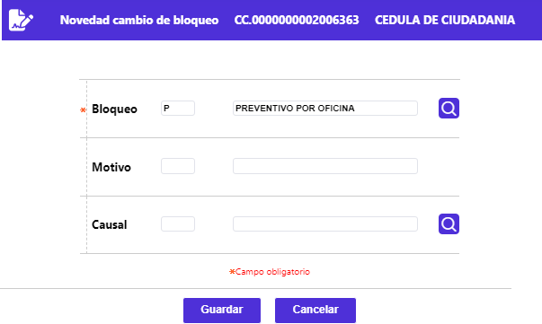

Cambio bloqueo
La funcionalidad de este formulario invocada desde la opción Generación de novedades débito, permite modificar el bloqueo actual de una tarjeta débito en particular. Luego de diligenciados los datos que apliquen, mediante el botón Guardar, el sistema realiza las validaciones a que haya lugar y aplica la novedad.

Descripción de campos
Bloqueo actual |
Al desplegarse el formulario, por defecto trae el bloqueo actual del plástico, es un campo obligatorio, en el que se puede ingresar o seleccionar de la lista de valores poblada en la opción Estados y bloqueos, al momento de asignar un código de bloqueo (del plástico) diferente al actual, se debe tener en consideración que existe una jerarquía entre los mismo definida por la entidad. El formulario permite, si es el caso, dejarlo en blanco para indicar que se está levantando el bloqueo a la tarjeta diferente a nulo. |
Motivo |
Campo que se activa y se convierte en obligatorio cuando el bloqueo actual o a asignar, corresponde a Cancelación voluntaria, debiendo seleccionarse de la lista de valores poblada en la opción Motivos de cancelación, por el cual la entidad decide cancelar la tarjeta. |
Causal |
ECampo no obligatorio en el que se puede ingresar o seleccionar de la lista de valores poblada en la opción Motivos devolución voluntaria la razón argumentada por el cliente para solicitar la cancelación voluntaria de su tarjeta. |